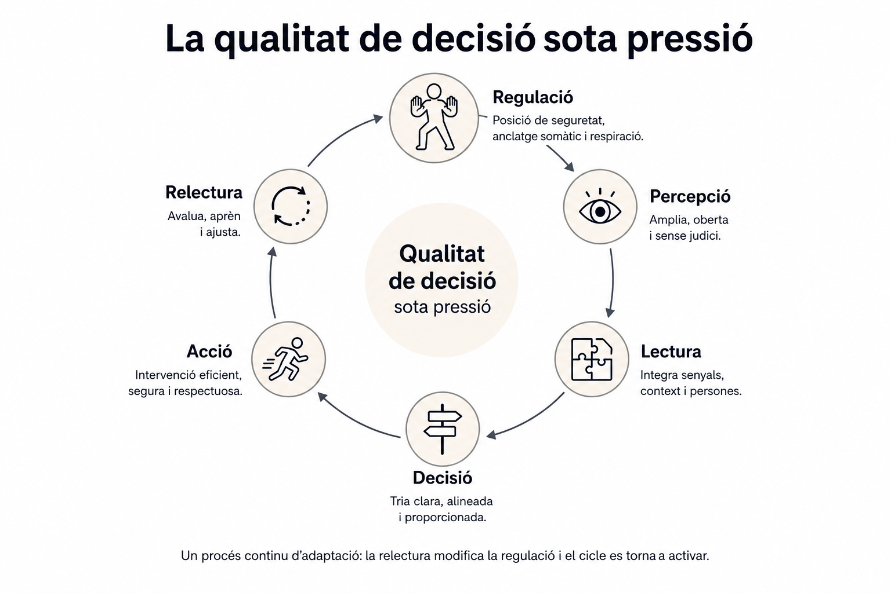

Qualitat de la intervenció sota estrès.
Per a professionals, equips i organitzacions que intervenen en contextos d'alta incertesa.
Sol·licita informacióQuan les opcions percebudes disminueixen també es redueix la capacitat de decisió.
Augmenta la reactivitat, disminueix la qualitat de lectura de la situació i apareixen intervencions menys ajustades.
Conservar opcions és conservar capacitat de decisió.
El SIIPP desenvolupa la capacitat de conservar regulació, ampliar la percepció i mantenir la qualitat de la intervenció quan augmenta la pressió.

El Sistema Integral d'Intervenció Psicofísica (SIIPP) desenvolupa la qualitat de la intervenció en situacions d'alta pressió.
Integra regulació, percepció, lectura, decisió, acció i relectura dins d'un mateix sistema per ampliar la capacitat d'intervenció quan augmenta la complexitat.
La qualitat d'una intervenció depèn de la qualitat de les decisions que la sostenen.
El SIIPP desenvolupa professionals, equips i organitzacions amb més capacitat per intervenir de forma proporcional, segura i ajustada en contextos d'alta incertesa.
La formació, la consultoria i la implantació comparteixen un mateix objectiu: millorar la qualitat de la intervenció.
Desenvolupem la qualitat de la intervenció en professionals que actuen en situacions de crisi i alta pressió.
Analitzem el funcionament dels equips, els procediments i les dinàmiques d'intervenció per identificar oportunitats de millora.
Acompanyem la integració del sistema dins de l'organització perquè el model es transfereixi a la pràctica quotidiana.
El SIIPP s'ha desenvolupat durant més de vint anys d'intervenció, formació i consultoria en contextos d'alta complexitat.
Actualment s'aplica en diferents centres que treballen en l´àmbit de la diversitat funcional, la discpacitat ,la salut mental,i l´educació especial i serveis d'atenció social.